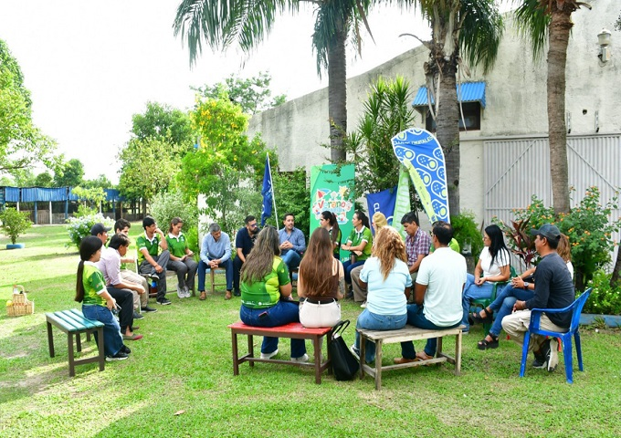

Funciones principales de IAS
-
Regulación y control de juegos de azar en la provincia
El IAS establece el marco legal y las normativas vigentes para asegurar que todas las actividades lúdicas se desarrollen de manera transparente y segura en todo el territorio provincial.
-
Fiscalización de salas de juego y casinos
Contamos con un equipo de inspectores especializados que supervisan diariamente el funcionamiento de los establecimientos, garantizando la honestidad en los sorteos y el cumplimiento de los pagos.
-
Otorgamiento de licencias y habilitaciones
Gestionamos de manera integral el proceso de autorización para nuevos operadores, asegurando que solo entidades responsables y acreditadas puedan ofrecer servicios de entretenimiento al público.
-
Programas de juego responsable
Promovemos la salud y el bienestar de los ciudadanos mediante campañas de concientización y herramientas de autoexclusión para prevenir conductas adictivas relacionadas con las apuestas
-
Destino de fondos para programas sociales
El total de los recursos recaudados se reinvierte directamente en la comunidad, financiando proyectos de salud, educación y asistencia para los sectores más vulnerables de la provincia.